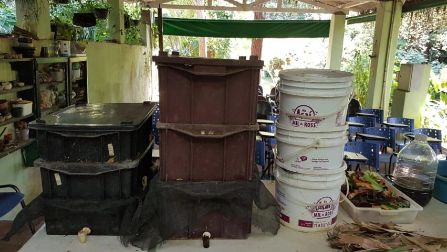

Em tempos de pandemia, em que as pessoas têm ficado mais em casa dedicando-se a novas atividades, hoje a Escola Municipal de Jardinagem vem mostrar como você pode obter, de forma simples, o adubo para as suas plantas usando os resíduos orgânicos gerados e ainda contribuir para o meio ambiente.
As atividades humanas geram grande quantidade de resíduos, tanto inorgânicos quanto orgânicos. Com mais de 12 milhões de habitantes, São Paulo é a metrópole campeã brasileira na produção de resíduos sólidos. Diariamente, são cerca de 20 mil toneladas de resíduos:
Deste total, 12 mil toneladas são de coleta domiciliar.
Todos esses resíduos quando dispostos de forma inadequada no ambiente, provocam sérios problemas de poluição (do solo, ar e água). Nos grandes centros urbanos como São Paulo, a destinação final mais comum para esses resíduos são os aterros sanitários, que têm ficado cada vez mais distantes, onerando os cofres públicos.

>